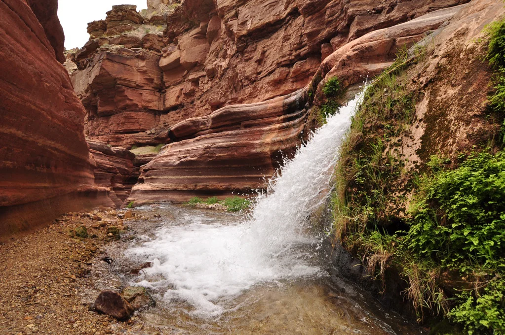

Connect
Bring people, organizations, and partnerships together around shared conservation challenges and opportunities.
Connecting people, knowledge, and resources to protect springs worldwide.

Springs are where groundwater reaches the surface — connecting aquifers to rivers, wetlands, landscapes, wildlife, and people.
They can support extraordinary concentrations of life, yet springs remain overlooked in conservation, research, and policy around the world.
The gaps on our globe are part of the story. We are building a global community to expand knowledge, share expertise, and turn that knowledge into conservation.
Bring people, organizations, and partnerships together around shared conservation challenges and opportunities.
Strengthen access to knowledge, skills, tools, resources, technical support, and capacity.
Scale effective conservation action and influence policy, practice, investment, and public awareness.
Bringing together global expertise through an IUCN inter-Commission mechanism to strengthen the scientific foundation for springs conservation worldwide.
Researchers, practitioners, Indigenous Peoples and local communities, governments, conservation organizations, funders, and partners all have a role in building a future for springs.
Discover the Alliance →